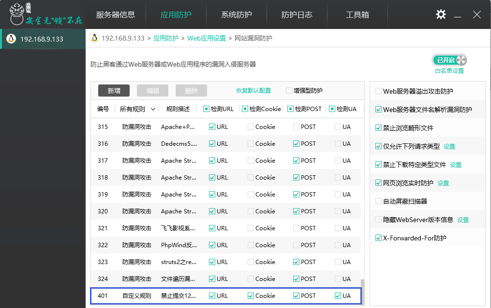
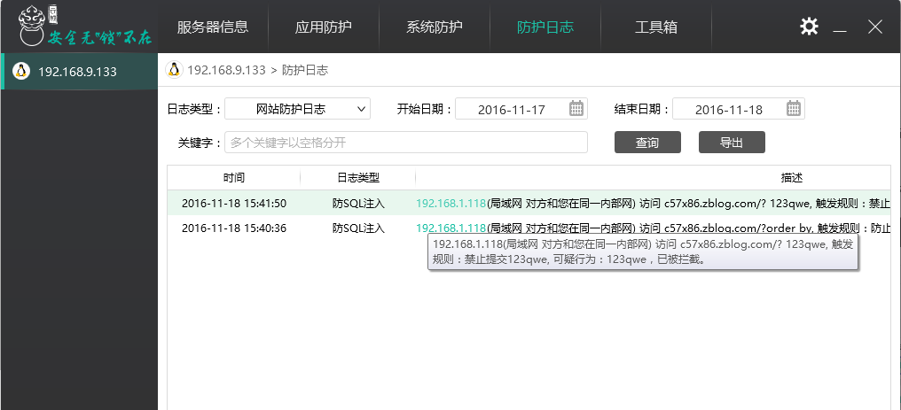
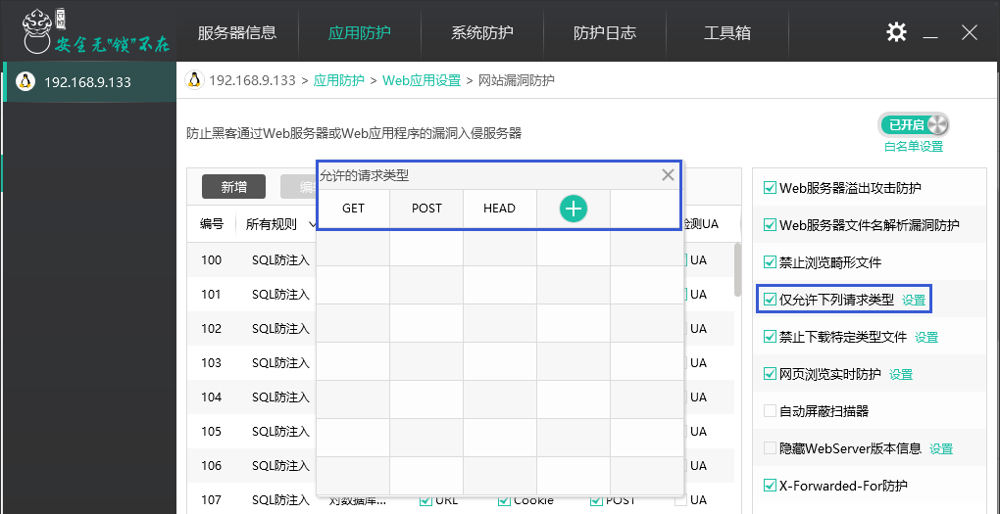
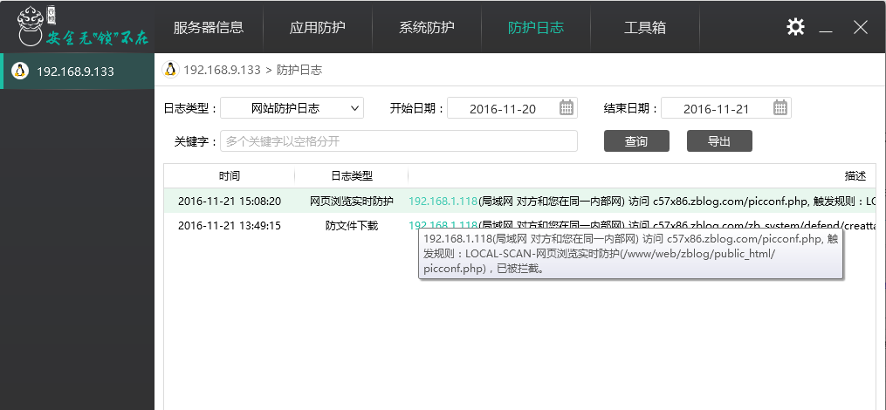

“网站漏洞防护”功能说明
云锁“网站漏洞防护”功能通过漏洞防护（防SQL注入、XSS防护、漏洞攻击防护）、Web服务器溢出攻击防护、Web服务器文件名解析漏洞防护、禁止浏览畸形文件、仅允许下列请求、禁止下载特定类型文件、网页浏览实时防护等功能防止黑客利用Web服务器或Web应用程序的漏洞入侵服务器。同时网站例外名单功能还可以对误判而拦截的用户请求进行放行，并且允许自定义拦截页面提示信息，充分考虑到了用户体验和用户需求。
通过“应用防护”中的Web防护（IIS、Apache、Nginx等）进入Web应用设置，打开“网站漏洞防护”功能。


- SQL防注入
- 溢出攻击防护
- 文件名解析漏洞防护
- 禁止浏览畸形文件
- 仅允许下列请求类型
- 禁止下载特定类型文件
- 网页浏览实时防护
- 自动屏蔽扫描器
- 隐藏WebServer版本信息
- X-Forwarded-For防护
- 其它设置
SQL防注入
该功能通过匹配SQL注入、XSS攻击等攻击类型特征库对用户输入进行过滤，从而实现防止攻击保护网站的目的。
我们主要通过SQL防注入的默认防护规则为例通过相应的攻击实例来介绍该功能设置。
[info] XSS防护和防漏洞攻击设置与SQL防注入设置相同。
1） 开启SQL防注入规则的“防止简单的and or方式注入”的“检测URL”

在浏览器的地址栏输入SQL注入的命令 and 1=1进行注入，如下图

输入该条命令后，浏览器返回云锁拦截界面。每当有SQL注入时，云锁都会返回该拦截提示界面及提示信息。

云锁的防护日志下可以看到对应的日志。

2） 开启SQL防注入规则的“防止简单的and or方式注入”的“检测Cookie”。

使用工具burp获取Cookie，修改Cookie值后继续访问。

访问后会返回与“检测URL”一样的拦截页面。同时在防护日志会生成对应的拦截日志。
3） 开启SQL防注入规则的“防止简单的and or方式注入”的“检测POST”。

在http协议中，搜索是Post方式提交请求；所以在搜索框中输入注入语句“? and 1=1”并提交。

提交后部分网站会返回与“检测URL”一样的拦截页面，部分网站会禁止提交请求，一直显示提交中。同时在防护日志会生成对应的拦截日志。
4） 开启SQL防注入规则的“防止简单的and or方式注入”的“检测UA”。

访问网站时，在http请求的User-Agent中加入“and 1=1”进行访问

访问后网站会返回与“检测URL”一样的拦截页面。同时在防护日志会生成对应的拦截日志。
5） 除了默认的规则，我们还设置了自定义添加规则的功能，方便用户自己调整规则，充分加强了用户的自由度。

提交自定义请求访问页面时，同SQL注入防护一样，会返回拦截页面及生成防护日志。


如果不需要实时防护，可以在“设置中心”开启“监控模式”，此时所有对网站的攻击行为只记录不拦截。

当配置的注入规则较为复杂而影响网站正常使用时，可以通过“设置中心”恢复默认配置，以使网站可以正常使用。

溢出攻击防护
“Web服务器溢出攻击”通常指缓冲区溢出攻击，黑客通常利用向程序输入缓冲区写入使之溢出的内容从而破坏程序运行并取得程序乃至系统的控制权。用户可以通过开启云锁的“Web服务器溢出攻击防护”功能抵御类似的攻击，从而防止黑客获取系统的控制权。
开启“Web服务器溢出攻击防护”功能。

在浏览器地址栏输入超长URL，进行溢出攻击。

同时，在云防护日志中可以看到对应日志。

文件名解析漏洞防护
黑客可以上传类似wooyun.asp;.jpg、wooyun.php.owf.rar的可执行脚本文件，利用IIS和Apache的解析漏洞，使脚本文件执行从而获取系统权限，威胁网站的安全。用户可以通过开启云锁的“Web服务器文件名解析漏洞防护”功能防止黑客利用这些漏洞对服务器进行攻击，对黑客类似攻击行为进行拦截。
开启“Web服务器文件名解析漏洞防护”功能。

在浏览器地址栏输入含有wooyun.asp;.jpg的URL进行访问。

同时，在云锁防护日志中可以看到对应的日志。

禁止浏览畸形文件
黑客通过构造类似com1.php;jpg之类的畸形文件的后缀名上传到服务器上再结合IIS的解析特性即可成功执行代码，然后获取必要的网站配置等信息威胁网站的安全。用户可以通过开启云锁的“禁止浏览畸形文件”功能抵御类似的攻击，保护网站服务器的安全。
开启“禁止浏览畸形文件”功能。

在浏览器地址栏输入含有com1.php;jpg的URL进行访问。

同时，在云锁安全防护日志中可以看到对应的拦日志。

仅允许下列请求类型
网络传输中主要通过HTTP协议进行传输。但是熟悉HTTP协议的黑客可以通过构造或伪装一些请求进行攻击，如使用PUT请求将危险代码传送到网站上，从而威胁到网站的数据。用户可以通过开启云锁的“仅允许下列请求”功能，一些不需要的请求进行提交，来有效抵御类似的攻击，保护网站服务器的安全。
开启“仅允许下列请求”功能。

使用Fiddler Web Debugger工具发送不允许的OPTIONS请求

同时，在云锁防护日志中可以看到对应的日志。

禁止下载特定类型文件
在互联网中用户的数据信息、软件的运行日志等信息都是黑客可以利用的信息，一旦存放这些文件的路径被获取，会给用户和网站带来难以想象的麻烦。用户可以通过开启云锁的“禁止下载特定类型文件”的功能，保护这类文件不被下载，进而保护用户数据和运行日志的安全。
开启“禁止下载特定类型文件”的功能。

通过浏览器下载.sql文件。

同时，在云锁防护日志中可以看到对应的日志。

网页浏览实时防护
服务器经常会被黑客上传网页木马，通过上传的网页木马获取和修改服务器上数据和文件，影响用户的网站正常访问，给用户带来损失。而“网页浏览实时防护”主要是针对黑客利用其它途径上传了网页木马，通过浏览器访问网页木马时进行拦截从而保护用户的网站不被修改。
假设网站下已被上传网页木马，未开启“网页浏览实时防护”访问该网页木马。

开启“网页浏览实时防防护”功能并访问网页木马。


同时，在云锁防护日志中可以看到对应的拦截日志。

自动屏蔽扫描器
攻击者通常先使用扫描工具或扫描器探测网站服务器是否有可被利用的漏洞，然后利用漏洞进行攻击。
开启“自动屏蔽扫描器”功能，当发现有这类行为时则直接阻断攻击者对网站服务器的扫描；同时会产生日志。


隐藏WebServer版本信息
攻击者通常会获取网站Web Server的版本信息，利用对应版本的漏洞对网站进行恶意攻击、渗透等。
云锁的“隐藏WebServer版本信息”功能则通过自定义WebServer内容将其版本信息进行隐藏，使攻击者无法通过Web Server的版本利用相应的漏洞进行攻击。
开启“隐藏WebServer版本信息”功能，并设置Web环境信息别名：test；设置后需要重启WebServer。

设置后通过调试器可以看到自己的Web Server版本信息被改为设置的别名。

X-Forwarded-For防护
该功能主要是防护网站被恶意用户构造异常的“X-Forwarded-For”字段进行访问，从而对网站造成威胁。
开启“X-Forwarded-For防护”功能，构造异常“X-Forwarded-For”对网站进行访问。


当攻击者构造异常的“X-Forwarded-For”字段访问网站时，则会被拦截。


其它设置
考虑到用户使用漏洞防护的灵活性，云锁还提供了“网站例外名单”功能，可以对不需要拦截的网站进行放行；除此还可设置报警提示和自定义拦截页面提示，满足用户的各方面需求。
当用户对网站进行管理或构造一些代码对网站进行监控时，会被云锁拦截导致这类行为无法进行；这就需要用户将需要进行操作的网站或对应的文件设置为“网站例外名单”。点击“设置”进入“设置中心”，在“网站漏洞防护”添加需要例外的网站或文件路径。

除“网站例外名单”功能外，还可以“自定义拦截信息提示”，让拦截页面更加的人性化。